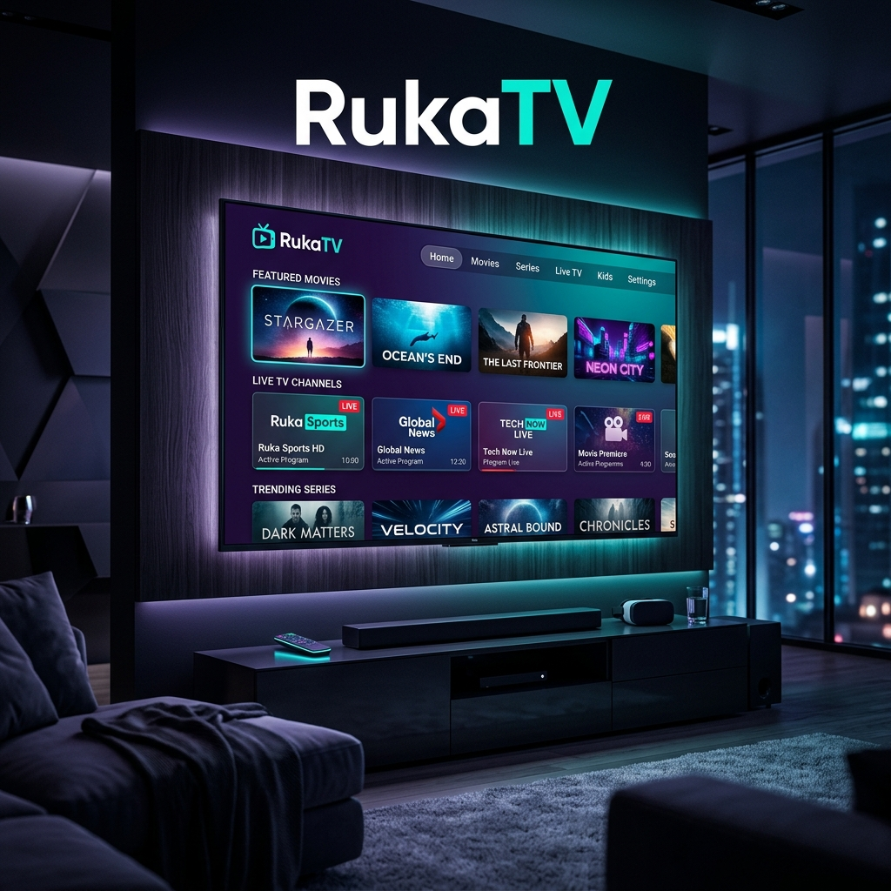
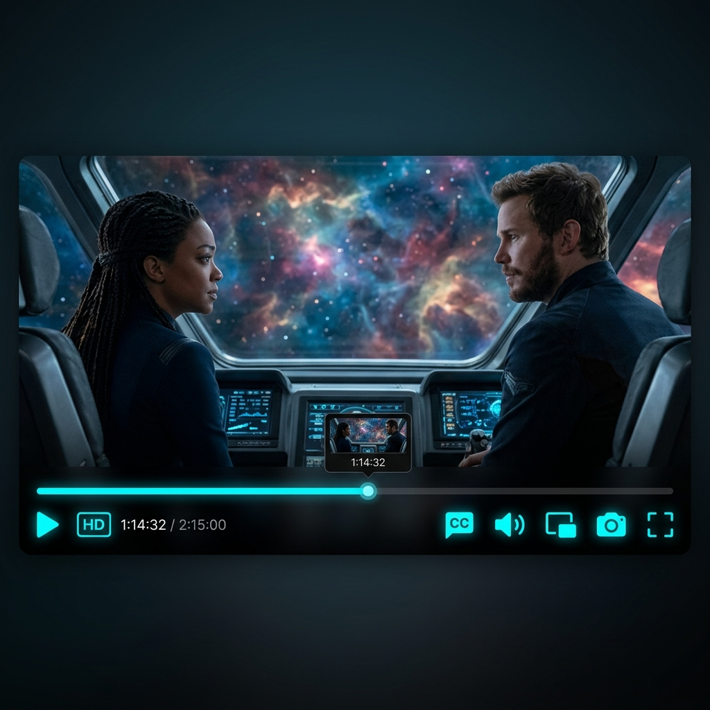

Tu próxima historia.
En tu pantalla.
TV en vivo, películas y series desde tu cuenta de Rukaserver. Abre RukaTV en tu teléfono, tablet o Android TV y elige qué ver.
Versión 1.5.1 · Android 5.0 o superior · APK universal

Elige cómo quieres ver.
Explora el catálogo de tu servidor desde una misma aplicación.
Televisión en Vivo
Encuentra canales nacionales e internacionales, deportes, noticias y contenido infantil en el catálogo de tu servidor.
Películas en HD y 4K
Busca por género y elige una película. La calidad disponible depende del contenido y de tu conexión.
Series Completas
Recorre temporadas y episodios con el control remoto de tu Android TV.
Descargas y Grabaciones
Pantallas dedicadas para gestionar tus contenidos favoritos offline y programar grabaciones de televisión en vivo directamente en tu dispositivo.

Conecta tu cuenta. Empieza a ver.
- Autenticación segura mediante protocolo Xtream Codes y API REST
- Streams adaptivos HLS (.m3u8) y MPEG-TS con buffer inteligente
- Guía EPG en vivo con información del programa actual
- Favoritos y progreso sincronizados en tu cuenta
- Actualizaciones automáticas OTA desde el propio servidor
- Compatible con Android 5.0+, tablets y Android TV / Smart TV
RukaTV 1.5.1, lista para instalar.
Descarga el APK e instálalo en tu dispositivo Android. Para acceder al contenido necesitas la dirección de tu servidor, tu usuario y tu contraseña.
Descarga el APK
rukatv-1.5.1.apk en tu teléfono.